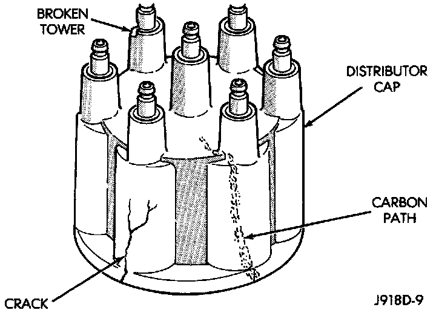
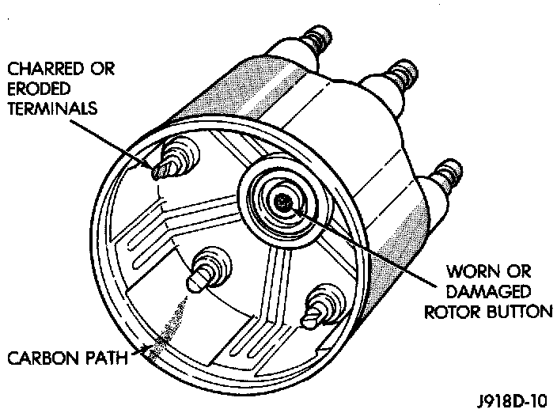

Distributor Cap: Testing and Inspection
DISTRIBUTOR CAPFig. 10 Cap Inspection - External - Typical:

Fig. 11 Cap Inspection - Internal - Typical:

Remove the distributor cap and wipe it clean with a dry lint free cloth. Visually inspect the cap for cracks, carbon paths, broken towers or damaged rotor button (Fig. 10) and (Fig. 11). Also check for white deposits on the inside (caused by condensation entering the cap through cracks). Replace any cap that displays charred or eroded terminals. The machined surface of a terminal end (faces toward rotor) will indicate some evidence of erosion from normal operation. Examine the terminal ends for evidence of mechanical interference with the rotor tip.